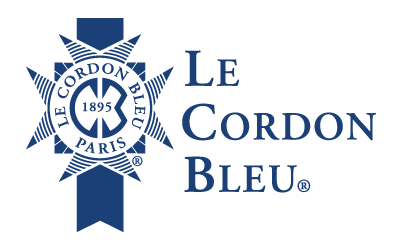

Bem-vindo à Le Cordon Bleu
Fundada em Paris, a Le Cordon Bleu é uma das mais prestigiadas escolas de gastronomia do mundo. Há mais de um século, formamos chefs e profissionais apaixonados pela culinária e hospitalidade.
Nossos Cursos
- Gastronomia Francesa
- Confeitaria e Panificação
- Cozinha Internacional
- Gestão de Restaurantes